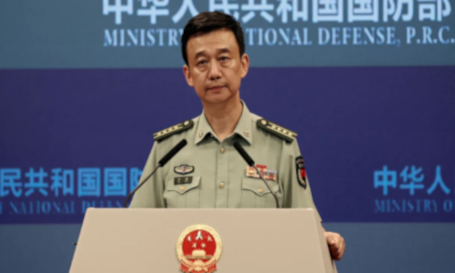
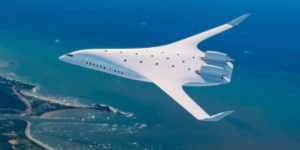

Notícias pelo mundo
Em nova escalada de tensão, China envia aviões de guerra a Taiwan
O Ministério da Defesa da China acusou o governo de Taiwan, nesta quinta-feira (28), de insinuar uma ameaça militar da China para obter ganhos eleitorais antes das eleições na ilha, que ocorrerão em pouco mais de duas semana. Na contramão disso, a pasta enviou aviões de guerra para o Estreito de Taiwan. Em uma coletiva de imprensa mensal em Pequim, o porta-voz do Ministério da Defesa chinês, Wu Qian, culpou o governo de Taiwan pelas tensões.
JetZero: Este novo projeto de avião é o futuro da aviação?
Formato "corpo e asa combinados" permitiria uma configuração diferente de assentos e poderia oferecer 50% menos queima de combustível
